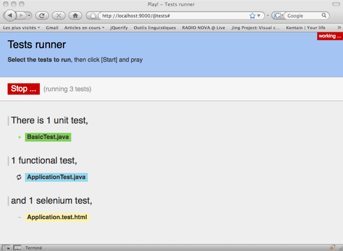

Test your application
Creating automatic test suites for your application is a good way to make it robust. It allows you to work in a very agile way.
Play tests are built using JUnit 4 or Selenium depending what you want to test.
Writing tests
The tests must be created in the test/ directory. This folder will only be added to the sources path when the application is run in test mode. You can write 3 different kinds of tests.
Unit test
A unit test is written using JUnit. In this kind of test you can test the model of your application (including some utilities).
Here is an example of a Unit test:
import play.test.*;
import org.junit.*;
public class MyTest extends UnitTest {
@Test
public void aTest() {
assertEquals(2, 1 + 1); // A really important thing to test
}
@Test
public void testUsers() {
assertEquals(3, Users.count());
}
}
Functional test
A functional test is written using JUnit. In this kind of test you can test your application by accessing directly the controller objects.
Here is an example of a Functional test:
import play.test.*;
import play.mvc.*;
import play.mvc.Http.*;
import org.junit.*;
public class ApplicationTest extends FunctionalTest {
@Test
public void testTheHomePage() {
Response response = GET("/");
assertStatus(200, response);
}
}
Using the renderArgs() method, you can also get direct access to the arguments passed to the view, instead of having to make assertions about the response itself. For example:
@Test
public void testUserIsFoundAndPassedToView() {
Response response = POST("/user/find?name=mark&dob=18011977")
assertThat(renderArgs("user"), is(notNullValue());
User user = (User) renderArgs("user");
assertThat(user.name, is("mark"));
}
Selenium test
Acceptance tests are written using Selenium. Here you can test your application by running it in an automated browser.
Selenium tests are written using HTML tables. You can either use this native syntax or use the #{selenium /} tag.
Here is an example of a Selenium test:
#{selenium 'Test security'}
// Try to log in the administration area
clearSession()
open('/admin')
assertTextPresent('Login')
type('login', 'admin')
type('password', 'secret')
clickAndWait('signin')
// Verify that the user in correctly logged in
assertText('success', 'Welcom admin!')
#{/selenium}
Because Selenium tests are run within your browser access to emails sent by the mock email and to String values placed in the Play Cache must be made using extensions to Selenium.
Here is an example of accessing the most recent email sent to a specific email account:
#{selenium 'Test email sending'}
// Open email form and send an email to boron@localhost
open('/sendEmail')
assertTextPresent('Email form')
type('To', 'boron@localhost')
type('Subject', 'Berillium Subject')
clickAndWait('send')
// Extract the last email sent to boron@localhost into a JavaScript
// variable called email
storeLastReceivedEmailBy('boron@localhost', 'email')
// Extract the subject line from the email variable into a variable
// called subject
store('javascript{/Subject:\s+(.*)/.exec(storedVars["email"])[1]}', 'subject')
// Test the contents of the subject variable
assertEquals('Berillium Subject', '$[subject]')
#{/selenium}
Here is an example of accessing a String stored in the Play Cache (for example the correct answer to a CAPTCHA):
#{selenium 'Get string from cache'}
open('/register')
assertTextPresent('Registration form')
type('Email', 'my@email.com')
type('Password', 'secretpass')
type('Password2', 'secretpass')
// .. Fill in the registration form ..
// Get the value of the magicKey variable from the cache
// (set to the CAPTCHA answer in the application)
storeCacheEntry('magicKey', 'captchaAnswer')
// Type it into the form
type('Answer', '$[captchaAnswer]')
clickAndWait('register')
#{/selenium}
Fixtures
When you run tests, you need to have stable data for your application. The simplest way is to reset your database before each test.
The play.test.Fixtures class helps you to manipulate your database and to inject test data. You typically use it in a @Before method of a JUnit test.
@Before
public void setUp() {
Fixtures.deleteDatabase();
}
To import data, it is simpler to define them in a YAML file that the Fixtures helper can automatically import.
# Test data
Company(google):
name: Google
Company(zen):
name: Zenexity
User(guillaume):
name: guillaume
company: zen
And then:
@Before
public void setUp() {
Fixtures.deleteDatabase();
Fixtures.loadModels("data.yml");
}
You can read more about Play and YAML in the YAML manual page.
For Selenium tests, you can use the #{fixture /} tag:
#{fixture delete:'all', load:'data.yml' /}
#{selenium}
// Write your test here
#{/selenium}
Sometimes it is convenient to split data into several YAML files. You can load fixtures from multiple files at once:
Fixtures.loadModels("users.yml", "roles.yml", "permissions.yml");
and for Selenium tests:
#{fixture delete:'all', load:['users.yml', 'roles.yml', 'permissions.yml'] /}
Running the tests
To run the tests, you must run your application in test mode using the play test command.
# play test myApp
In this mode, Play will automatically load the test-runner module. This module provides a Web based test runner, available at the http://localhost:9000/@tests URL.

When you run a test, the result is saved into the /test-result directory of your application.
On the test runner page, each test is a link. You can ‘right click’ and ‘Open in a new tab’, to run the test directly outside of the test-runner.
When you run tests this way, Play will start with a special test framework ID. So you can define special configurations in the application.conf file.
If you want several different test configurations, you can use framework IDs matching the pattern test-?.* (e.g: test-special).
If you use a framework ID other then the default test, you must make sure ALL test configuration in application.conf is available with that framework ID. When launching test with special test framework ID you do it like this: play test --%test-your-special-id
For example:
%test.db=mem
%test.jpa.ddl=create-drop
Continuous integration, and running the tests automatically
The auto-test command does the same as the test command, but it automatically launches a browser, runs all the tests, and stops.
This is a useful command if you want to set up a continuous integration system;
After the run, all results are saved to the /test-result directory. Moreover, this directory contains a marker file (either result.failed or result.passed) for the test suite’s final result. Finally, this directory contains all the logs, in an application.log file.
So setting up a continuous integration system to test your application, could be:
- Checkout the latest version of your application
- Run
play auto-test - Wait for the end of the process
- Check for the marker file
result.passedorresult.failedin the/test-resultdirectory
Run these steps in a CRON tab, and you’re done!
You can change the web browser compatibility mode used by the headless browser by configuring headlessBrowser.
Continuing the discussion
Next: Security guide.